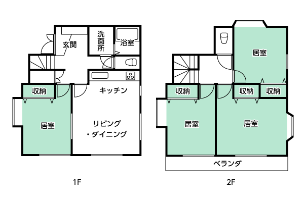

満室
きれいな内装で快適にお過ごしいただけます。
近隣には業務スーパーもあり買い物にも便利です。
また目の前にバス停があり、入間市駅までの移動も快適です。
門前には、シーサーの置物が鎮座し、入居者をお守りしています。
営業時間は、17時から翌9時までです。
昼間は別途日中サービスの利用が必要です。
※日曜日を除く
朝食、夕食と日曜日の昼食を提供しています。
夜間もスタッフが常駐しているので安心です。
22時〜翌5時までは1時間に1度巡視しています。

| 障害支援区分6 | 668単位 |
|---|---|
| 障害支援区分5 | 552単位 |
| 障害支援区分4 | 471単位 |
| 障害支援区分3 | 385単位 |
| 障害支援区分2 | 295単位 |
| 障害支援区分1以下 | 259単位 |
| 外泊期間3日以上7日未満 | 187単位/回 |
|---|---|
| 外泊期間7日以上 | 374単位/回 |